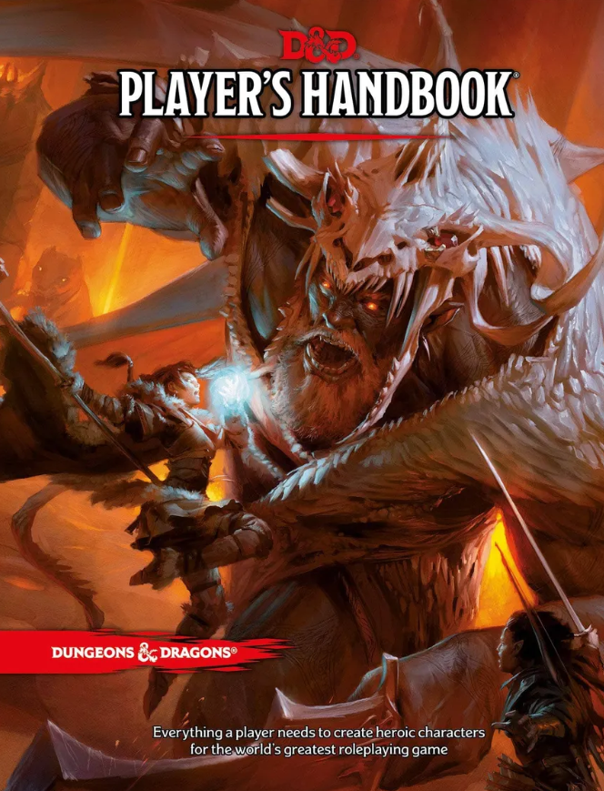
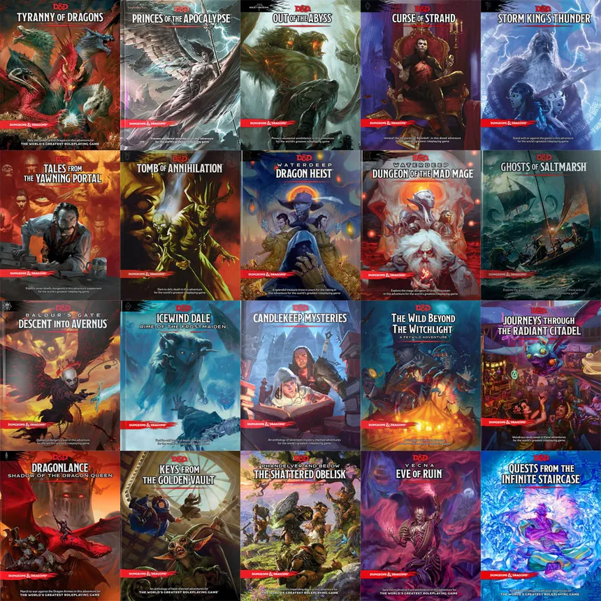
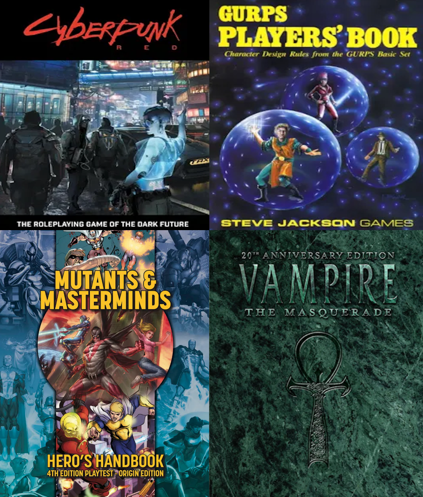

Really it depends on you.
After experiencing D&D and finding a friend group that I play with once or twice a week was a joy in my highschool life, creating stories and interesting characters with cool moments between friends, inviting new people occasionally throughout the years.
Though D&D isn't perfect, some mechanics to it make me want to tear my hair out and sometimes people you play with is a coinflip, I was lucky with my group though there are plenty of problematic players out there that might make how you viewed or tried TTRPGs for the first time be recieved more poorly to no fault of the system.
But also some mechanics are genuinly confusing.
Often times when reading spells, class abilities and mechanics, or enemy abilities and mechanics. You'll squint your eyes and question a few things, like how come summoning a FEY CREATURE is CHEAPER than summoning a IRON GOLEM whilst Iron Golems are much more stronger than a Fey creature summon, you only need a flower worth 350 gold which doesn't get consumed on use, whilst you need to spend 250 gold each time you try to summon a golem, said gold is consumed on use. Though these mechanics can be handwaved, nerfed, or buffed by the DM at their discretion, but referring to how it's written, it's a bit weird.
Though this issue also goes with some spells that exist in the game, you have plenty of very niche and specific spells that most people wouldn't take unless they were playing around with their spell list at hand, some spells like 'jump' or 'longstride' seem useful in the sense that you can jump higher or move 10 more feet than usual, but they cost an ACTION to do and have their own limitations over any other spell that would be much more beneficial and just a hundred percent better.

Though these are costly, almost too costly.
Let's refer to both physical and digital modules, physically you had to spend 50 or so bucks just for the players handbook, more or less if the cover was hard. Though the digital era became the mainstay and a convenience to play tabletop, DnDBeyond, a website utilizes digital modules and 'packaged' modules that cost nearly a hundred bucks or so.
Beforehand, you were able to select 'specific' sections of a module, are you mostly a player than a dungeon master? You could buy sections of the modules playable races, subclasses, items, and disregard the 'Dungeon Master' focused content for much cheaper. But because of corporate greed (as we're always plagued with) they've stopped that feature and made you have to buy a whole book even if 75% of the content does not even matter to what you're trying to buy it for initially.

Cyberpunk RED, GURPs, Mutants & Masterminds, Vampire The Masquerade.
There's so many modules out there, that these are the one's ive tried in my lifetime. Because playing D&D all the time can genuinely be boring after the 3rd or 4th campaign, so sometimes you need a fresh slate
You want Sci-Fi? Corporate Dictatorship with Cybernetic Augmentation? Play Cyberpunk RED.
You want to be a super hero or super villain? Play Mutants & Masterminds.
You want to be a vampire and fight against your humanity as you have to drink blood to survive now? Play Vampire The Masquerade.
You want to do literally whatever you want? GURP's fits that, but also there's literally multiple TTRPGs for everything you want, Star Wars, Game of Thrones, etc. You want to play a niche TTRPG system? Something likely exists if you look for it, this is a hobby that's existed for so many years that there is bound to be something you prefer.